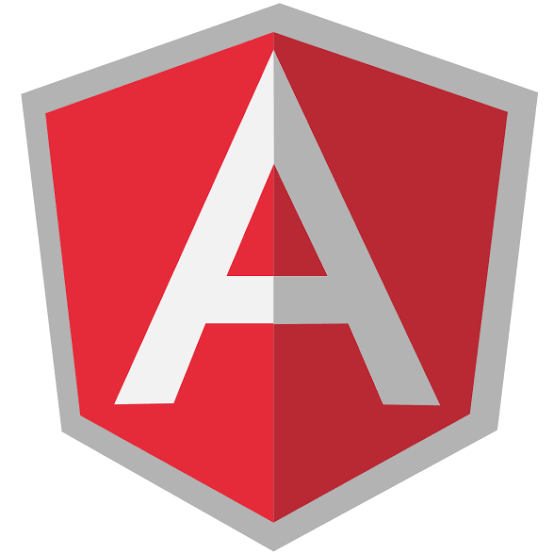
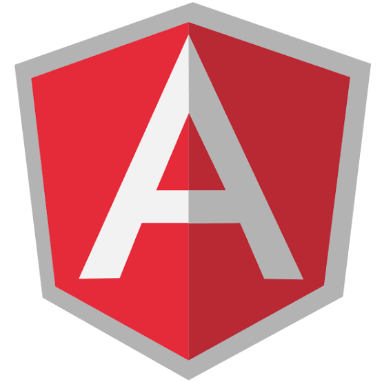

Thiago Fernando
Graduated in Analysis and Development of Systems by the University Center of Várzea Grande - UNIVAG, and I am also C # .Net Software Developer
Experience
.NET Developer Analyst
Analyst Developer of Squads for development of solutions with .net core, .net framework, Asp net mvc, Entity Framework, WebApi, Angular with Agile Methodologies
Junior Development Analyst
Corrective and evolutive maintenance in systems using the .net and C # language platform in client, server, web applications and the transact-sql database language with sgbd microsoft sql server. Search for defects and failures of implementation and specification to ensure the functionality, reliability, usability, efficiency, maintainability and portability of systems and portals
Support analyst
Acting as IT Support Analyst in Linux, Windows, MacOSX, Intermediate Administration in Linux (CentOS, Debian, OpenSuse), Microsoft Windows Server 2012 R2 environments, and virtual environments using Hyper-V and VMWare, Intermediate Support Application Servers: Tomcat, Apache and call control, support analysis, installation and configuration of hardware, software and corporate systems, Perform local and remote support and support in Microsoft environments (Windows, Office, Active Directory), and systems (Outlook / Exchange), Service requests, and IT troubleshooting, Manage Tools in a Microsoft Windows Server environment such as Active Directory, FilePrint Server, Security Groups, GPO, Remote Desktop, and RemoteApp
Junior Support Analyst N1
hardware maintenance advanced configuration level, basic anti-virus e-mail software in local network environment Windows detecting problems in hardware components such as: boards, cables, connectors, drivers, monitors fonts, installation, configuration change of printers, scanners, maintenance and configuration of Microsoft Windows 98/2000/2003 / XP / 7/8 environments, installation, configuration and customization of software and / or workstation products, Internet and Intranet environment, computer network maintenance, wireless, TCP / IP protocol, network security and encryption, smartphone configuration; installation and configuration of anti-malware, attacks, Bots, Viruses, Spywares, Spam, installation and configuration maintenance and operation of videoconferencing and VoIP installation and maintenance of telephone extensions
Support analyst
Support in Systems and Database, Deployment and User Training
CPD Technician
Technical Support in Computing
Education
University Center of Várzea Grande - UNIVAG
Skills


 

- Mobile-First, Responsive Design
- Cross Browser Testing & Debugging
- Cross Functional Teams
- Agile Development & Scrum
Interests
In addition to being a web developer, I spend a few hours of my day participating in various meetup technology events to meet people from the area, or at happy hour gastronomic events with friends and listening to music. When I stay indoors, I watch science fiction and fantasy films and TV shows, and I'm an aspiring chef. I love venturing between one recipe and another, and I spend a great deal of my free time exploring the latest technological advances in the world of web development.